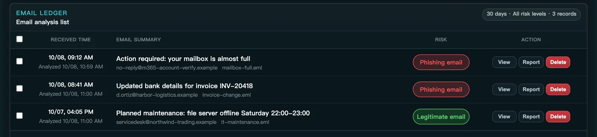
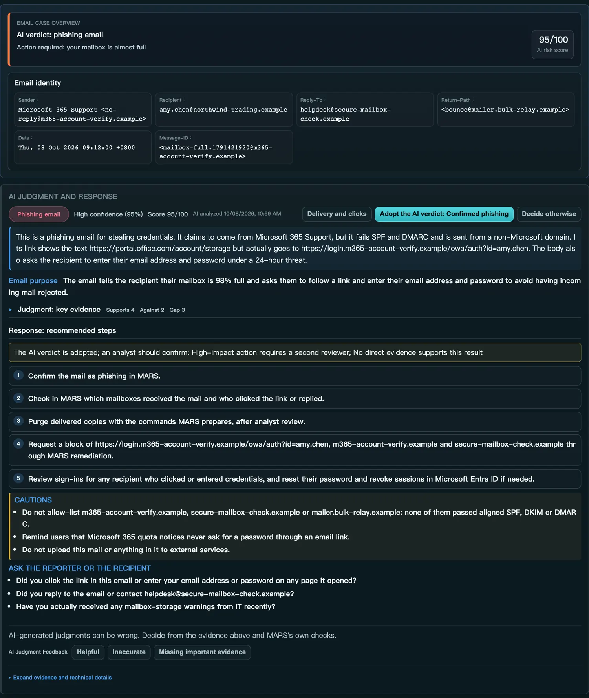
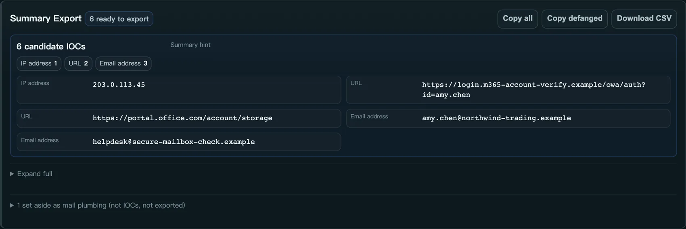
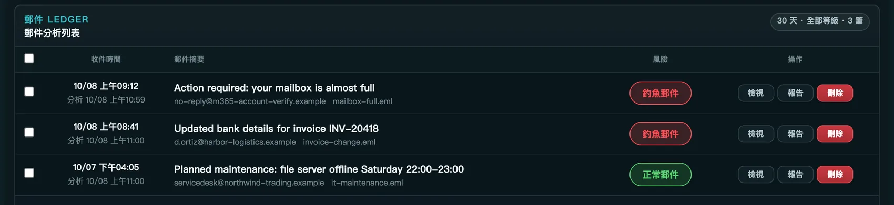
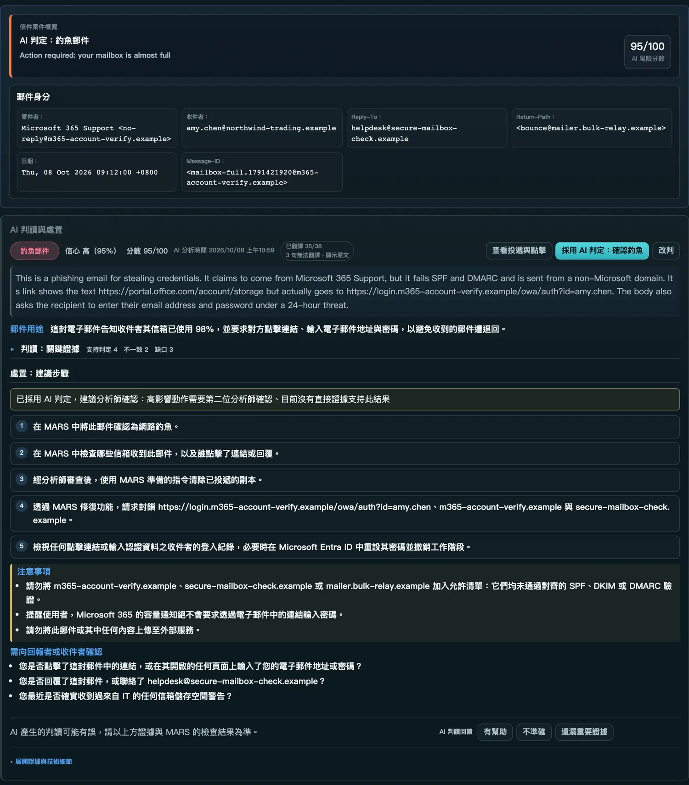
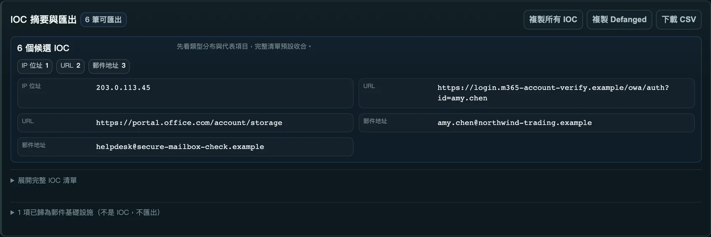

Eleven pages cover the analyst's day, in Traditional Chinese and English, light and dark.
Captured from a local MARS instance analysing synthetic emails with a Claude model. No real mail or accounts appear.



MARS is built for teams that cannot hand their mail to someone else.
十一個頁面涵蓋分析師的日常工作，有繁體中文和英文、淺色和深色。
擷取自本機的 MARS，以 Claude 模型分析合成的範例郵件。畫面中沒有任何真實的郵件或帳號。



MARS 是為了不能把郵件交給別人的團隊設計的。